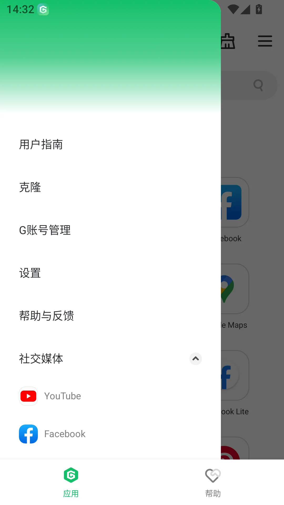

把 GBox 嵌进我的安卓工作流——从每周同步到秒级直达的一段改造
用 GBox 跑谷歌应用不是终点，我花了三周把它跟自己的邮件、笔记、网盘串成了一条完整的手机工作链，这里是实操记录。
我每天要在手机上处理 Gmail、整理 Notion、跑 Google Drive 的同步任务，还得偶尔打开 YouTube 看教程片段。以前这套活儿在安卓上是一场灾难——Gmail 装不上或者装上就卡死，Notion 要先开浏览器再登录，Drive 同步经常断，YouTube 只能靠网页版应付。三四个应用各自为政，每天光打开它们就要花掉十分钟。
最早试 GBox官网上介绍的这个容器，我只是想"让这堆谷歌应用在华为手机上跑起来"。但装完、登录、跑通之后我才发现，真正有价值的不是"能跑"本身，而是把沙箱里的应用跟系统层面的日常操作串成一条链。现在这套流程每周能帮我省出两三次手动复制粘贴的时间，推送也不再漏掉。下面是我实打实的改造过程，每个环节都能照搬。

旧流程卡在哪
改造前我是这么用的：
- 每天早上要回邮件 → 先开浏览器 → 找到 Gmail 网页版 → 扫码或输密码登录 → 打开收件箱（等加载要 30 秒）；
- 有好文章要存 → Notion 网页版里手动复制标题和链接 → 切到笔记应用 → 新建条目 → 粘贴 → 再切回浏览器继续看；
- 文件要云端备份 → 微信文件传输助手发到电脑 → 电脑端手动拖进 Google Drive 指定文件夹。
痛点很明确：每一步之间都有"切换成本"——开新标签页、重新登录、手动搬运数据。Gmail 网页版还会隔三差五弹二次验证，赶上网速慢就是一整个早晨。
新流程：GBox 是中枢
GBox 装完之后，它在这条链里的角色是"容器 + 桥"——沙箱里跑着谷歌全家桶，但我尽量不让自己感知到沙箱的存在，而是让这些应用通过桌面图标、后台推送、文件互操作直接暴露在系统层。
整条链现在是这样的：
- 邮件端：Gmail 在沙箱里跑，但我给它生成了桌面图标，手机桌面直接点开就是；锁屏有推送通知直接点进对应会话；
- 笔记端：Notion 装在沙箱内，通过 GBox 的"添加到桌面"功能生成了原生图标，配合 GBox 内部的剪贴板同步，在系统层复制的链接直接粘进 Notion 无需二次搬运；
- 同步端：Google Drive 常驻沙箱后台，通过 GBox 的自启动和忽略电池优化设置，锁屏后也能继续同步——以前用网页版根本做不到常驻；
- 联动点：微信发过来的文件，通过 GBox 的文件管理入口直接"打开方式选 Drive"，省掉了微信传电脑那一步。
这里有两个衔接点值得单独说——也是我调了一周才弄顺的地方。
衔接点一：桌面图标不是摆设
很多人装完 GBox 就停了，觉得"能用就行"。但把沙箱应用生成桌面图标是整条链的起点——它把"先进 GBox 再进应用"这层路径彻底抹平了。
具体操作不难：在 GBox 应用列表里长按 Gmail 或 Notion 的图标，弹出菜单选"添加到桌面"就行。我第一次做的时候以为这只是个快捷方式，但实际用了一周之后发现，这步解决的是"心理门槛"——以前我知道谷歌应用在 GBox 里，但每次要特意想起"哦我得先开 GBox"；现在桌面图标摆在那，点开就是，跟点微信没区别。
要注意的是，桌面图标指向的仍然是 GBox 沙箱里的应用本体，不是把应用装进了系统。所以卸载 GBox 的时候所有桌面图标都会一起失效——这点我在一次清理 GBox 缓存时踩过坑，后来养成了升级前顺手备份沙箱数据的习惯。
衔接点二：后台推送不能漏
第二个容易断的环节是锁屏推送。华为系统默认会把 GBox 归为"后台耗电"类，锁屏几分钟后就杀掉进程，Gmail 的新邮件通知就彻底丢了。
解决这个问题只需要两步设置：给 GBox 开自启动，然后在电池优化里把它加入忽略列表。这两个开关在华为手机上分属不同的设置页面（应用管理里找自启动，电池管理里找白名单），第一次找费了点时间，但设完之后就再也没碰过。GBox 装好之后立刻去做这两件事，是整个流程里最容易被忽略但影响最大的前置动作。

升级怎么不打断流程
跑了两个月之后我遇到一个问题：GBox 出了新版本，但我不敢贸然升级——怕升级过程中沙箱数据丢了，整个工作链就断了。
后来才搞清楚，GBox 的标准升级方式是直接覆盖安装——从官方下载拿新 APK 点安装，系统提示"更新"而不是"安装"，确认之后沙箱里的一切原样保留：已装的应用、登录态、文件缓存全都不动。我现在升级之前会先查一下当前版本号（GBox 侧边菜单 → 设置里直接看），去GBox文档对照更新日志有没有我正遇到的问题，有就升，没有就等。
升级完之后习惯性检查三件事：版本号对上了没、沙箱里 Gmail 还能打开不、锁屏能不能收到推送。覆盖安装一般不会动权限，但花 30 秒确认一次比出问题再重来要省事。
效果与边界
现在这套流程每天帮我省的是：
- 少了两次手动复制（网页版 Gmail → Notion 的链接搬运、微信 → Drive 的文件中转）；
- 锁屏推送不再漏，平均每周能及时回掉 3~5 封以前看不到的紧急邮件；
- Google Drive 的后台同步终于稳定了，以前每天手动点一次"立即同步"现在不需要了。
但这套流程也有明显的边界：我只在华为手机上验证过，小米、OPPO 等其他品牌的后台管理策略可能不一样，自启动和电池白名单的入口位置也不同。另外，沙箱里的应用启动速度会比原生应用慢 1~2 秒——对日常使用影响不大，但如果有人要在沙箱里跑性能敏感的场景（比如大型游戏），体验会打折扣。
还有一点要说清楚：GBox 解决的是"在非谷歌服务的安卓设备上跑谷歌应用"这个问题，但它本身不提供任何谷歌账号或代理能力——这部分还是得自己搞定。GBox 只是容器，真正的工作流整合需要你花一两周时间把桌面图标、后台权限、文件互操作这些环节串起来，串完之后它就变成了你手机上最自然的一部分。我自己整理的这套配置笔记，分别同步放在了GitHub、Gitee、GitCode，墙内墙外的朋友各取所便。